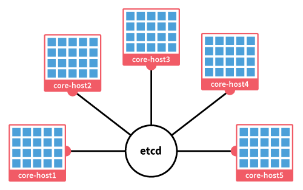

Comprendre etcd, fleet & go
Présentation de Gauthier C. / @CattGr
En 40 minutes ou plus
- Présentation de CoreOS
- Etcd
- Fleet
- Cloud-init
- Architecture
- Mise en oeuvre
- Outils annexes
Petit rappel
Docker c'est quoi déjà
Présentation de

- API Http en lecture/écriture via curl ou etcdctl.
- Clefs et valeurs stockées dans une arboresence comme un système de fichier.
- Superviser une clef ou un répertoire pour détecter un changement.
- Possibilité de fixer un vérou ou une durée de vie (TTL).
- Découverte des noeuds (static, etcd, dns).
Positionner une valeur
- $ ssh 10.0.0.1
CoreOS beta (xxx.x.x) - $ etcdctl set /foo "Hello world"
Hello world - $ curl -L -X PUT http://127.0.0.1:2379/v2/keys/bar -d value="Hello world"
{"action":"set","node":{"key":"/bar","value":"Hello world","modifiedIndex":1943007,"createdIndex":1943007}}
Récupérer une valeur
- $ ssh 10.0.0.1
CoreOS beta (xxx.x.x) - $ etcdctl get /foo
Hello world - $ curl -L http://127.0.0.1:2379/v2/keys/bar
{"action":"get","node":{"key":"/bar","value":"Hello world","modifiedIndex":1943007,"createdIndex":1943007}}
Cluster Etcd
Fleet
Architecture
Mise en oeuvre
Outils annexes
- A:
- B:
- C: